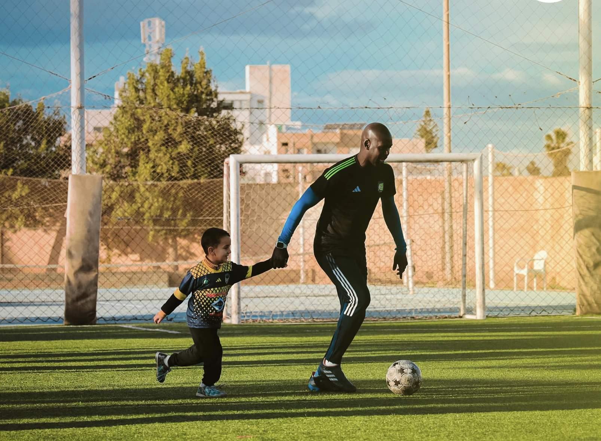
Nos
entraîneurs
Une équipe passionnée, certifiée par Coerver® International.
Des professionnels au service du développement de vos enfants.
Une équipe au service
de vos enfants
Coerver® Coaching Tunisie est fondé et dirigé par des professionnels du football formés et certifiés par Coerver® International. Notre équipe combine expertise technique internationale, expérience du football professionnel tunisien et une passion sincère pour le développement des jeunes joueurs.
Chaque coach de notre académie maîtrise le curriculum officiel Coerver® et applique la méthode dans chaque séance avec rigueur et bienveillance. Nous ne sommes pas qu'une académie — nous sommes une famille.

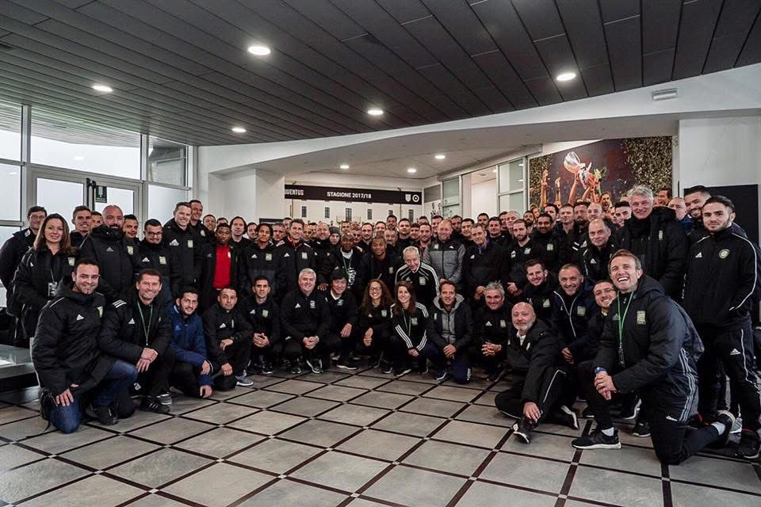
Milan 2018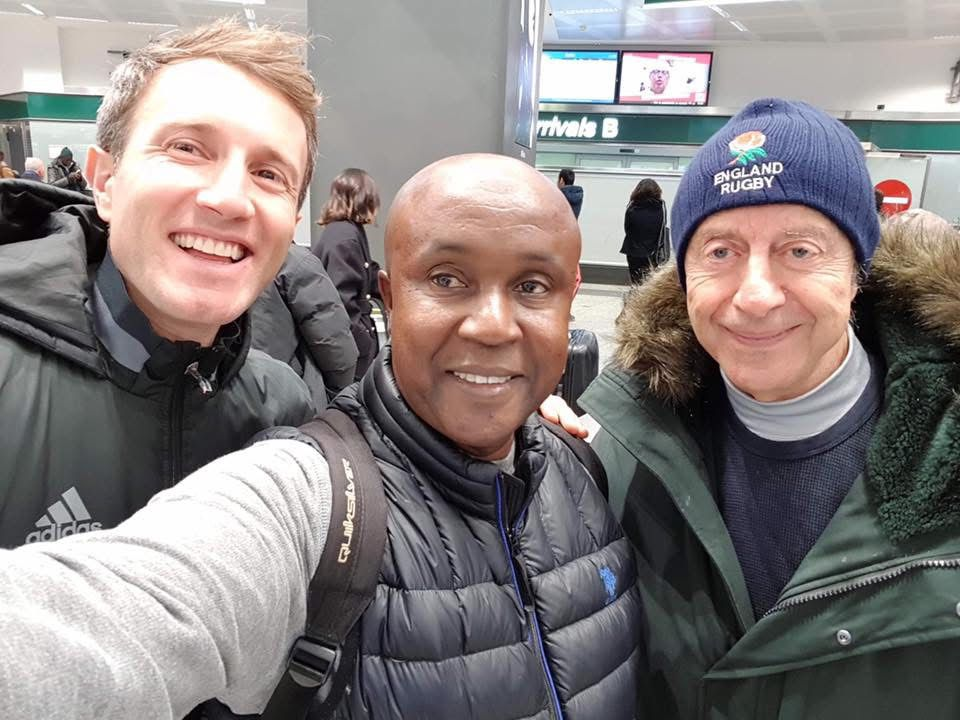
Clairefontaine 2025Mounir
Ouederni
Mounir Ouederni est le fondateur et directeur général de Coerver® Coaching Tunisie. Passionné par le développement du football tunisien depuis plus de 20 ans, il a fait le choix d'implanter la méthode d'entraînement N°1 au monde en Tunisie pour offrir à nos jeunes les meilleures conditions de progression. Formé en France et certifié internationalement, Mounir cumule des diplômes obtenus dans les plus prestigieux centres de formation européens.
Titulaire du Certificat d'État de la Fédération Française de Football (Aix-en-Provence, 2008) et du Coerver® Youth Diploma, il a suivi ses formations aux CREPS d'Antibes et de Saint-Tropez (Nice, France). Il représente officiellement la Tunisie aux trois grandes conférences mondiales Coerver® : Milan 2018 (Juventus Training Center), Madrid 2022 (en partenariat avec Adidas et LaLiga), et Clairefontaine 2025 (Centre National du Football, France).
Certifications & distinctions
Salim
Cissé
Salim Cissé est le Directeur Sportif & Technique de Coerver® Coaching Tunisie et associé de la famille Coerver mondiale. Défenseur Central de haut niveau pendant plus de 20 ans de carrière professionnelle en Tunisie, au Sénégal et en Arabie Saoudite — dont plusieurs saisons en Ligue 1 Tunisienne — il apporte à notre académie une expertise du jeu que peu d'entraîneurs peuvent offrir.
Après sa retraite sportive en 2012, Salim s'est reconverti dans l'entraînement et la direction sportive avec plus de 10 ans d'expérience. Spécialiste certifié Coerver Coaching depuis 2015, il dirige aujourd'hui le développement technique de tous les joueurs de l'académie avec rigueur et passion.
Parcours & expertise
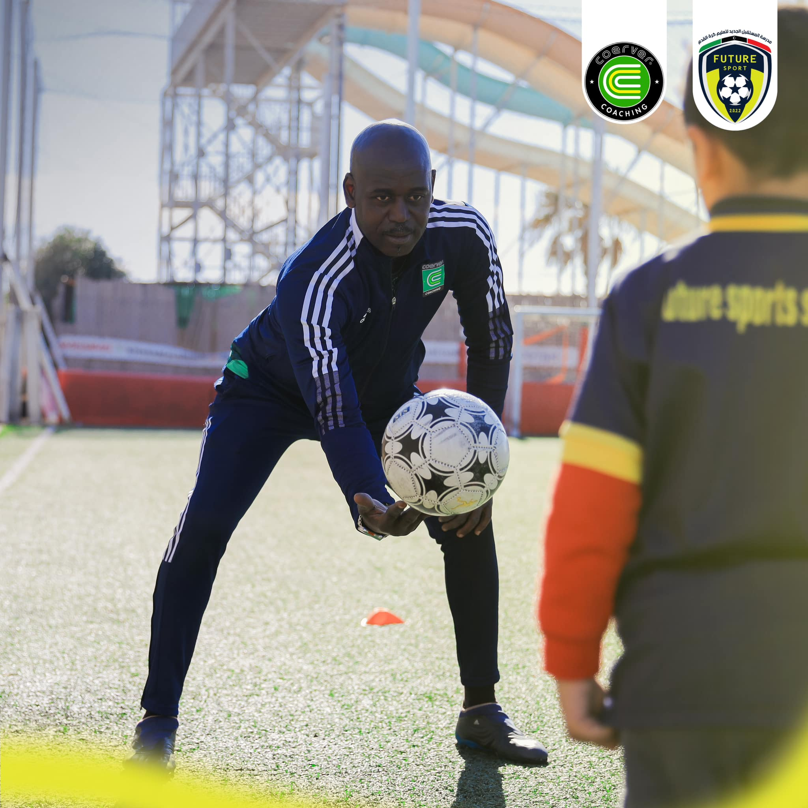
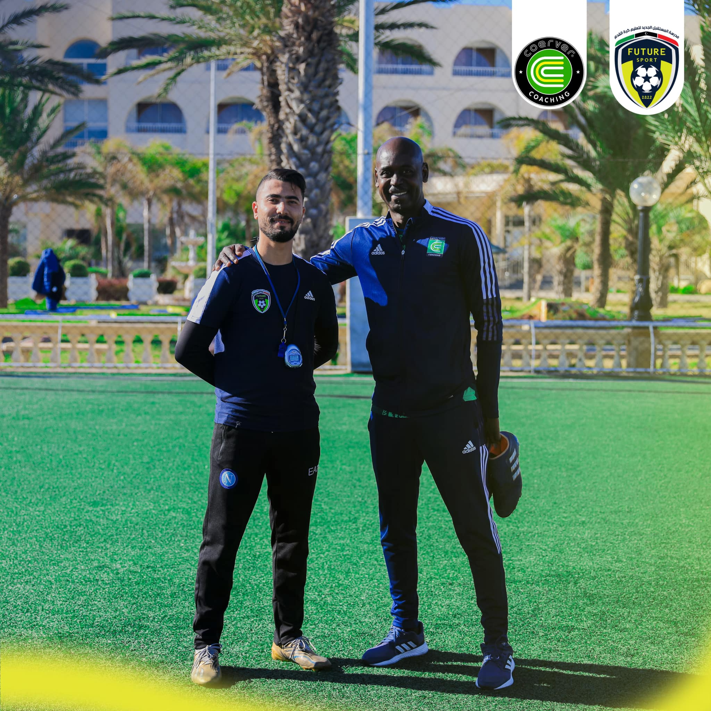
Nos coachs
Sur terrain
Des entraîneurs certifiés Coerver® qui encadrent quotidiennement nos jeunes avec passion, rigueur et la méthode N°1 mondiale.
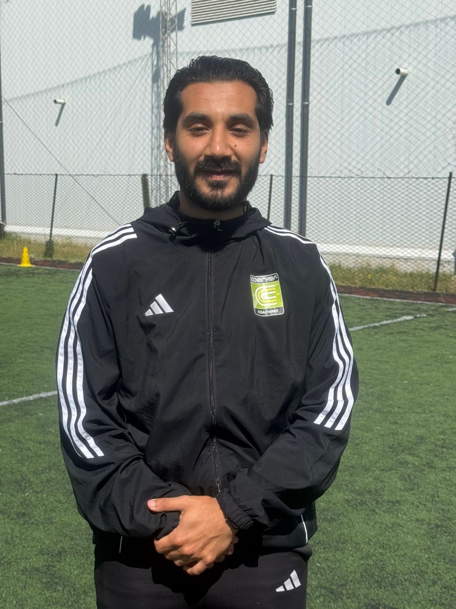
Chakib
Selmi
Entraîneur Terrain
Chakib Selmi
- Formé à la méthode Coerver® officielle
- Encadre nos jeunes sur le terrain
- Applique la pyramide de développement du joueur
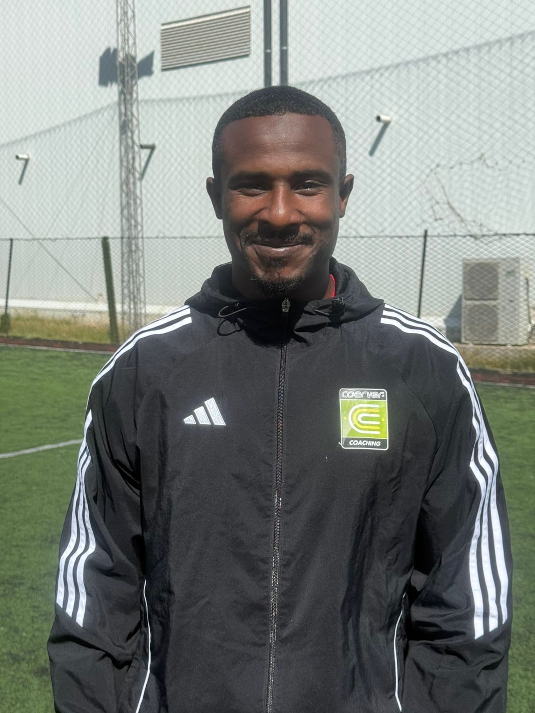
Wissem
Ben Sallem
Entraîneur Terrain
Wissem Ben Sallem
- Formé à la méthode Coerver® officielle
- Encadre nos jeunes sur le terrain
- Applique la pyramide de développement du joueur
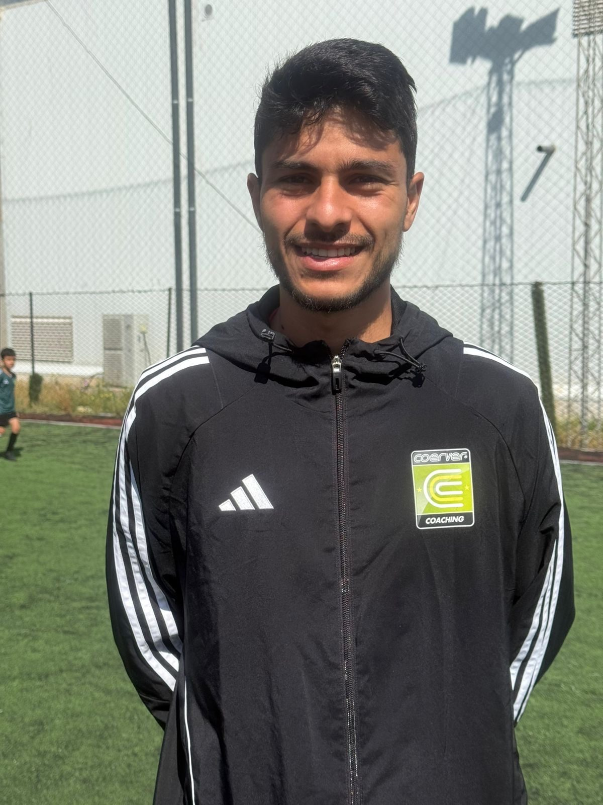
Amine
Ben Ayed
Entraîneur Terrain
Amine Ben Ayed
- Formé à la méthode Coerver® officielle
- Encadre nos jeunes sur le terrain
- Applique la pyramide de développement du joueur
Une franchise officielle
reconnue mondialement
Coerver® Coaching Tunisie n'est pas une académie ordinaire. Nous sommes une franchise officielle de Coerver® International — certifiée, formée et reconnue par l'organisation mondiale. Voici la preuve.
Coerver® World Convention — Milan
Mounir Ouederni représente officiellement la Tunisie à la convention mondiale Coerver® au Juventus Training Center de Milan, aux côtés des délégués de 50+ pays.
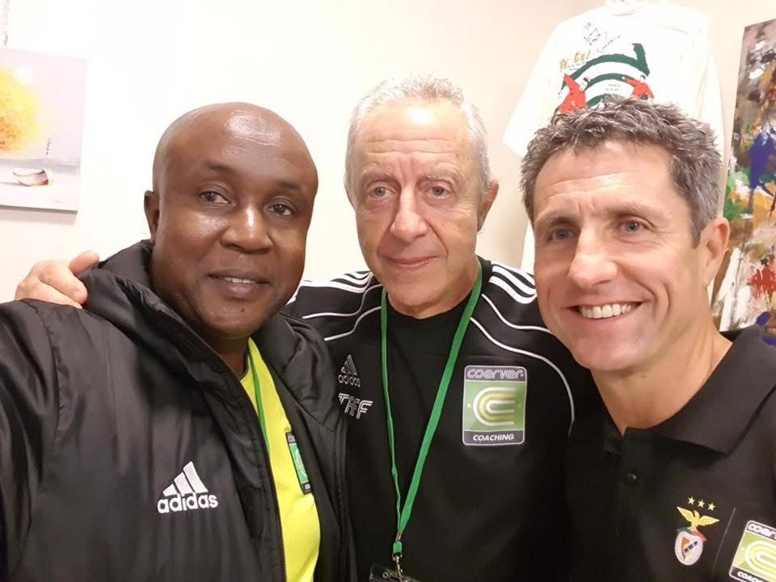
Coerver® World Convention — Madrid
Représentant officiel de la Tunisie à la conférence annuelle Coerver® à Madrid, en partenariat avec Adidas et LaLiga.
Coerver® World Convention — Clairefontaine
Représentant officiel de la Tunisie au Centre National du Football de Clairefontaine, France — siège historique de l'équipe nationale française.
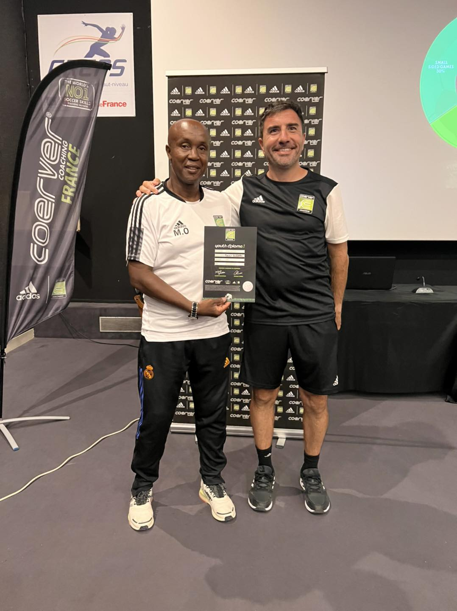
Coerver® Youth Diploma
La certification officielle délivrée par Coerver® International, attestant de la maîtrise complète du curriculum et de la méthodologie Coerver®.

Membre du Réseau Coerver® Mondial
Coerver® Tunisie fait partie du réseau officiel de 50+ pays et est en contact direct avec les responsables de Coerver® International.
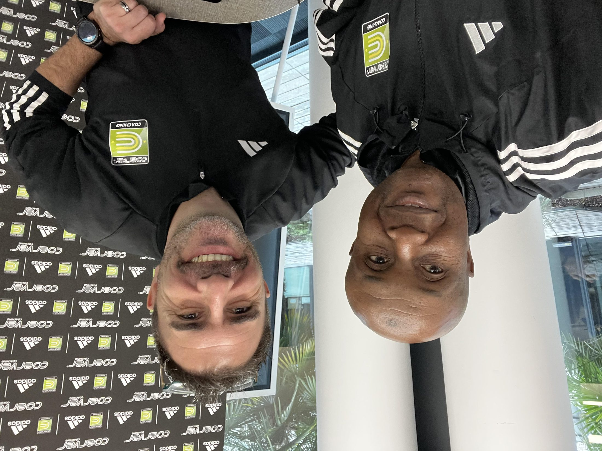
Connexion avec Coerver® France
Nos joueurs et coachs ont accès au réseau Coerver® européen, avec des opportunités de stages et formations en France et dans le monde.
Une école de
Coachs
Coerver® Coaching Tunisie ne forme pas seulement des joueurs — elle forme aussi des entraîneurs. En 8 ans d'existence, plus de 17 coachs ont été formés et certifiés à travers notre académie. La majorité d'entre eux sont aujourd'hui titulaires de la Licence CAF D et encadrent les équipes jeunes de clubs professionnels en Tunisie, en Europe et dans les pays du Golfe. Une fierté qui prouve que la méthode Coerver® crée de l'impact bien au-delà du terrain.